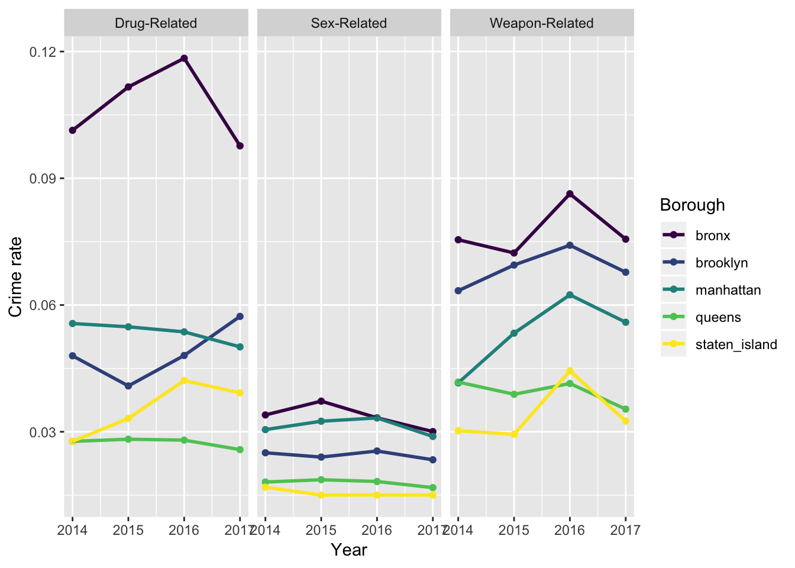

The last official census in the USA was in 2010. We will use the 2017 United States Census Bureau estimate population for the years of 2017, 2016, 2015 and 2014 as we do not expect a significant population change.
Combined weapons, sexual and drug related felony crime rates trends by borough
Stratify to see specific trends of the crimes

Bronx has consistently had the highest crime rate over the last 4 years for all the 3 types of crimes. We see a steep reduction, however in the crime rate for bronx between the years of 2016 and 2017. Crime rates for all crimes in all boroughs decreased from 2016 to 2016. Surprisingly, brooklyn has seen a consitent rise in the crime rate of drug related felonies from 2015 to 2017.